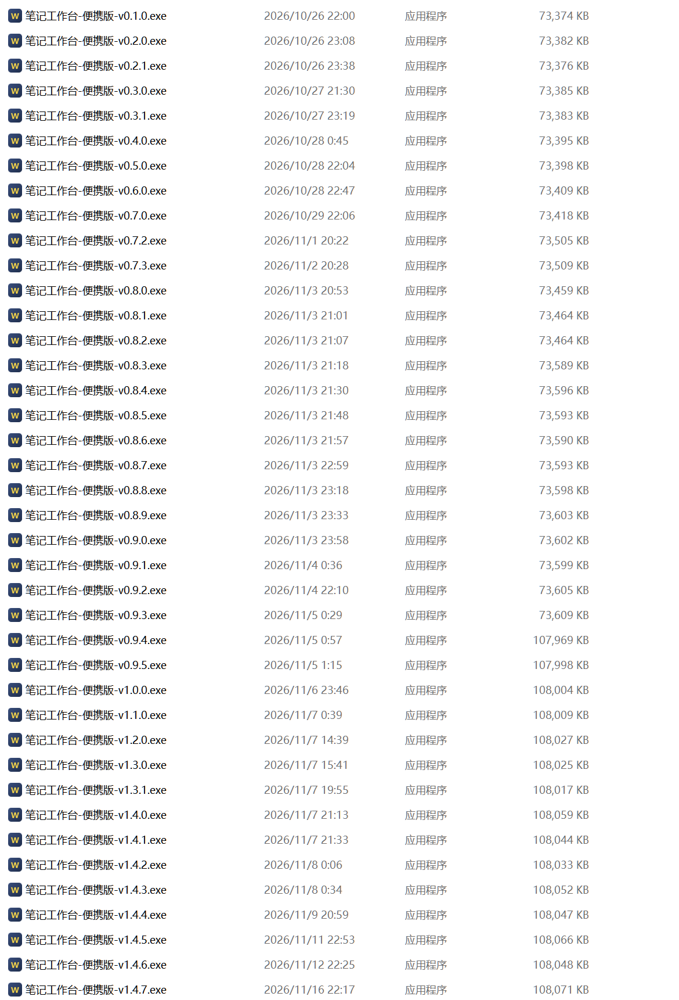

当前版本：v1.4.9。本文把最初的想法、后来遇到的问题与已经做出的产品放在一条线上。版本文件截图记录到 v1.4.7，v1.4.8 和 v1.4.9 的变化以本机项目 README 为准。
01我为什么想做它
运营小红书时，难的不是把一段话写出来，而是把一篇长文变成能发布的 3:4 图文卡片。要决定哪里换页，标题多大，哪一句值得突出，还要逐页检查和导出。只做一次并不难，持续发内容时，这些重复动作会占掉不少时间。
我最初想解决的问题很小：写完文稿后，能否先快速得到一套可用的卡片，再把精力留给封面和重点页？产品面向需要频繁做干货图文的创作者；既要快，也要允许人控制最后的视觉结果。
02第一版先跑通什么
v0.1 到 v0.7 的重点是最短路径：粘贴文字、自动拆页、预览卡片、批量导出。那时没有把编辑器做得很复杂，先确认“文字能变成可发布的图卡”这件事成立。早期界面把原文和预览放在一起，用户能立刻看到分页是否合理。
很快发现，只能一键生成还不够。文章一改，已经调好的页面可能被重排；封面和金句页也不适合交给统一规则处理。v0.8 加入更清晰的工作区和缩略图，让整篇顺序可以被看见，后续编辑才有了落脚点。
03最关键的一次产品取舍：三档模式
我没有把“自动”当成唯一答案。初稿阶段需要立刻看到结果，成稿阶段希望分页稳定，封面和重点页则要自己移动文字、图片。这是三个不同的工作时刻，所以做成可接力的三档模式。
- 全自动：写稿时快速更新预览，先看整篇能拆成什么样。
- 半自动：保留已有分页，用户点击“排成卡片”才重新计算，适合文稿定型后的微调。
- 全手动：文字和图片可以独立移动、缩放，适合封面、重点页和有明确视觉要求的页面。
同一篇笔记可以混用三档。自动页负责大部分重复排版；已经精修的手动页保留。原文变化可能影响手动页时，先展示重排预览和受影响页面，再由人决定是否应用。这条规则比“自动得更快”更重要，因为它保护已经花过时间的创作成果。
04AI 放在哪一步
AI 用来给写稿提供大纲与局部润色建议。建议先预览，由作者选择是否采纳，之后仍可撤销。卡片如何分页、封面如何摆，最终由作者确认。编辑与导出在本机完成；只有主动调用 AI 功能时，输入才会发到用户配置的服务。
我希望 AI 能帮人跨过空白页，而不是悄悄改掉人已经完成的排版。因此 AI 能力嵌在写稿层，排版层继续保持可预期、可回退。
05从 v1.0 到当前版本
v1.0 建立自由编辑页与三档模式，让封面、重点页可以单独打磨。v1.3 到 v1.4.3 重点解决“修改原文会不会冲掉精修内容”：增加冲突预览、历史恢复、项目备份和导出前检查。v1.4.4 到 v1.4.6 继续完善小节识别、文字版式、工程文件和字体选择。
v1.4.7 加入整篇总览、页面拖动排序、跨页移动内容和撤销。小幅改稿可先预览，再安全同步到手动页。v1.4.8 处理背景素材导出、缩略图排序和自由页的操作连续性。当前 v1.4.9 把页面位置锁定与重新排版分开，细化文字与高亮控制，并补充纸张底板和字体导出处理。这些变化都围绕一个目标：稿子越接近完成，工具越不能打断作者。

上图是版本文件记录，说明产品经历了多轮打磨；具体功能变化以项目 README 和界面为准，版本数量本身不代表用户效果。
06核心流程与验收
用户输入文稿后能看到自动分页结果；可在缩略图中找到并调整某一页；切到半自动时，继续改字不会立即打乱已有分页；把重点页转成手动页后，普通自动重排仍应保留它。导出前应能看到空白页、图片失败或溢出提示，并回到对应页修正。导出得到 1080×1440 PNG，顺序和预览一致。
同一篇 6 页笔记，原手工流程约 40 分钟，使用工作台约 4 分钟，制作时间减少约 90%。这个结果说明重复排版被压缩；它不替代对内容质量和设计审美的判断。
07下一步
继续减少新用户的学习成本，特别是分页语法与三档模式的切换说明；再观察哪些页面经常被转为手动页，以此决定模板和自动规则该往哪里改。增长目标不先写成结果，先让创作者能够稳定完成一篇笔记。